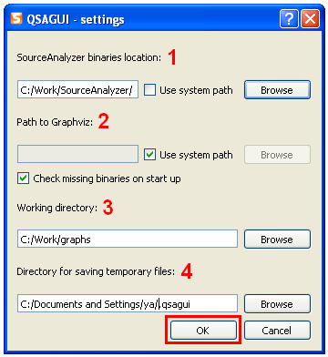

Contents
What is QSAGUI?
Getting started
Create call graph
Link call graphs
Clean call graph
Update call graph
Get funs/files lists
Show call graph
Settings
|
Settings
Use "Settings" -> "Settings..." or "Settings" button on tool bar.

1. Select path to SourceAnalyzer binaries. Check "use system path", if SourceAnalyzer is located in system path.
2. Select path to Graphviz. Check "use system path", if Graphviz is located in system path.
3. You can choose working directory. This option is for dialog of files/directory selection. If you will not specify it, last opened directory will be saved.
4. If you will not enter directory for saving temporary files, temporary files will be saved in home directory in ".qsagui" folder.
Press the "OK" button.
|